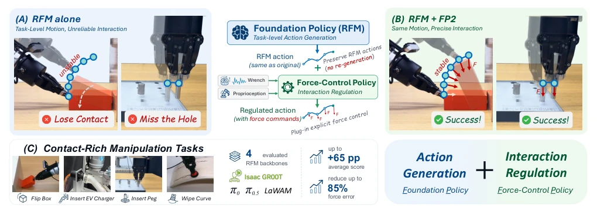
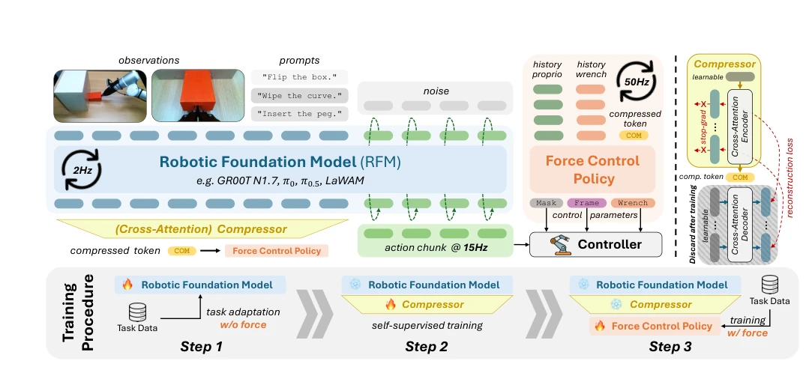
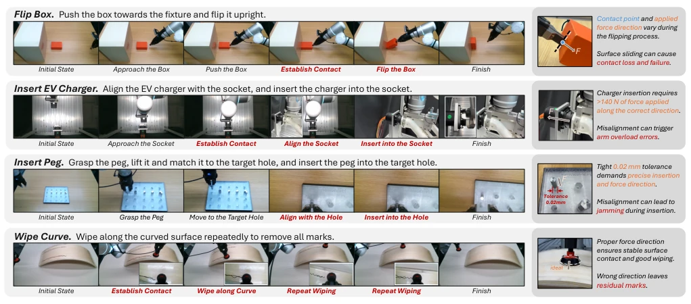
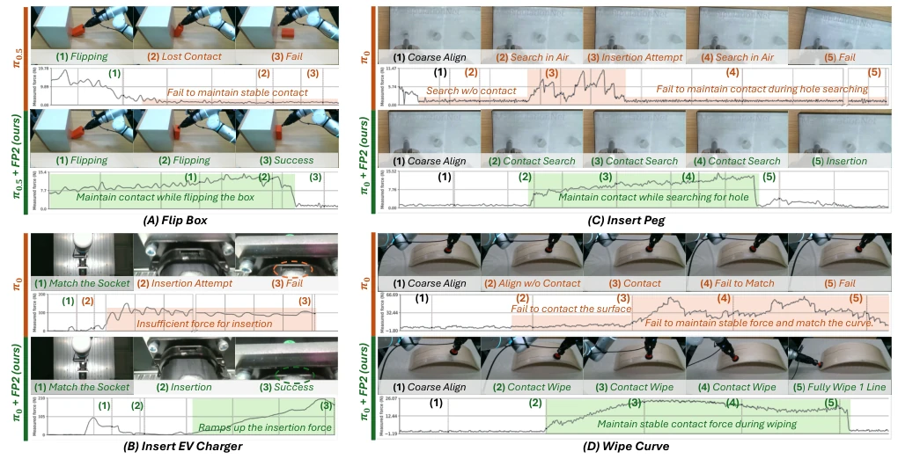
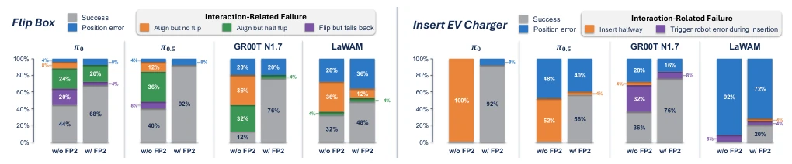

Robot Foundation Models (RFMs) can indeed understand human language and plan paths nowadays, but when it comes to rough contact tasks, they often fail, either applying excessive force or losing contact. This FP2 approach is quite clever; instead of forcibly equipping RFMs with force sensors, it externally attaches a "cerebellum" responsible for force control. It is like adding a collision avoidance radar to autonomous driving without changing its navigation algorithm. However, this method has a prerequisite: the RFM must first navigate correctly, while FP2 is only responsible for preventing collisions. If the RFM cannot even find the target, relying solely on force control is futile. Although this decoupled design is practical, it also exposes the inherent deficiencies of RFMs in physical interaction, after all, it hasn't learned how to "feel" the world. Furthermore, FP2 relies on RFM context compression; if key information is lost during compression, force control will also fail, which is a concern.
RFMs such as VLA [4, 5, 6] have progressed rapidly in general manipulation, but physical interaction remains a bottleneck. Directly adding force feedback to RFMs [37, 54, 59] would disrupt the pre-training distribution, requiring realignment, and force data is scarce in large-scale pre-training. Existing force control strategies [19] often require regenerating actions, which is inefficient and has poor generalization. FP2 proposes decoupling: RFM manages "where to go", force control strategy manages "how to touch". This avoids modifying the base model interface, retains RFM's generalization capability, while introducing explicit force regulation. This approach acknowledges that RFMs excel at high-level planning but lack low-level force control details, thus supplementing through downstream interfaces rather than reconstructing the model. Compared to methods like UniReflex [27] that regenerate actions simultaneously, FP2 focuses more on interaction regulation and is more efficient.

Fig. 1: FP2: Decoupling Action Generation with Interaction Regulation. (A) A task-adapted RFM can generate appropriate task-level motion yet still fail during physical interaction due to insufficient force regulation. (B) FP2 preserves foundation-policy action generation and adds a lightweight force control policy to regulate the same RFM actions using wrench and proprioceptive feedback, without action re-generation. (C) Across four RFM backbones and four contact-rich manipulation tasks, FP2 substantially improves task performance and force regulation, achieving up to 65 percentage-point gains in average score and reducing force error by up to 85%.
The framework consists of three steps: 1. Standard RFM task adaptation and freezing; 2. Self-supervised compression of RFM context Tokens into compact representations; 3. Training high-frequency force control policies. The force control policy input is compressed Tokens + force/proprioceptive history, outputting interaction frames, force-position selection masks, and expected torques. The key innovation lies in removing action generation and wrist vision from the force control policy, relying solely on RFM context, reducing latency and improving generalization. The controller runs at 50Hz, combined with RFM's 2Hz action generation, achieving hybrid force-position control. This design ensures RFM's action intent is preserved, while the force control policy is only responsible for fine-tuning interaction parameters, avoiding error accumulation from action regeneration. The compressor is trained via reconstruction loss to ensure information is not lost. Specifically, the compressor uses Cross-Attention to map long-sequence Tokens to a single vector, the Decoder is used only for training and discarded during inference. Parameters predicted by the force control policy are directly input into the hybrid force-position controller, without needing to replan trajectories. This multi-rate design balances computational efficiency with interaction response speed.

Fig. 2: FP2 Framework. (Top left) The task-adapted RFM serves as a foundation policy for action generation, while FP2 compresses its contextual tokens and combines them with wrench and proprioceptive histories to predict structured force-control parameters. (Top right) The contextual token compressor is trained self-supervisedly through reconstruction; the reconstruction decoder is discarded after training. (Bottom) Training proceeds in three stages: (1) standard RFM task adaptation, (2) self-supervised contextual token compression with the RFM frozen, and (3) force-control policy training with both the RFM and compressor frozen.
Tested on 4 real contact tasks (box flipping, peg insertion, etc.) with 4 RFM backbones. Metrics include Success Rate (SR) and Normalized Force Error (NFE). FP2 increased average scores by up to 65pp and reduced force error by 85%. Compared to TA-VLA [61] and ForceVLA [59], FP2 is more stable. Ablation shows RFM context and physical feedback are complementary; removing wrist cameras and action regeneration significantly improved generalization to new objects. Failure analysis indicates FP2 mainly addresses interaction failures and cannot correct RFM's motion planning errors. This indicates FP2 is a powerful external add-on for RFMs, not a replacement. In the Insert Peg task, FP2 increased success rate from 0% to 76%, showing significant effect.

Fig. 3: Contact-Rich Manipulation Tasks. We evaluate FP2 on 4 real-world tasks covering diverse physical interactions. Flip Box requires maintaining effective contact as the contact point and force direction vary during flipping; Insert EV Charger requires large insertion forces along the correct direction; Insert Peg demands precise alignment under a tight tolerance; and Wipe Curve requires sustained contact while following a curved surface. Red labels highlight the contact-rich phases, and the right panels illustrate representative challenges.

Fig. 4: Qualitative Analysis of Physical Interaction with and without FP2. Representative rollouts and measured force profiles are shown for (A) Flip Box, (B) Insert EV Charger, (C) Insert Peg, and (D) Wipe Curve. The foundation policy alone often fails due to lost contact, insufficient force, or unstable interaction, whereas FP2 maintains appropriate force regulation, enabling successful execution.

Fig. 5: Failure Analysis on Flip Box and Insert EV Charger. Each bar summarizes 25 trials and decomposes the outcomes into successful executions and different failure modes, grouped into position errors and interaction-related causes.